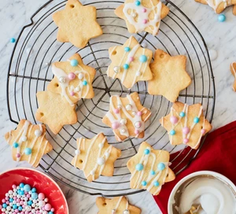

Christmas Vanilla Cookies

Description:
These festive vanilla cookies make a beautiful edible Christmas tree decoration. Or, you could pack them into boxes to give as end-of-term gifts for teachers and friends.
Quick preparation info:
Prep:10 mins Cook:12 mins Easy Makes 20 cookies
Ingredients:
- 140g icing sugar (sieved)
- 1 tsp vanila extract
- 1 egg yolk
- 250g butter
- 375g plain flour
Steps:
- Tip the icing sugar, vanilla extract, egg yolk and butter into a mixing bowl, then stir together with a wooden spoon (or pulse in a food processor until well combined). Add the flour and mix to a firm dough. Shape the dough into two flat discs and wrap them. Chill for 20-30 mins. Heat oven to 190C/fan 170C/gas 5 and line two baking sheets with non-stick baking paper.
- Roll out the dough on a lightly floured surface to about the thickness of two £1 coins. Cut out Christmassy shapes (use a cutter if you like) and place on the baking sheets. Using the tip of a skewer, cut a small hole in the top of each cookie. Bake for 10-12 mins until lightly golden.
- Lift the biscuits onto a wire rack to cool. Meanwhile, mix the icing sugar with a few drops of cold water to make a thick, but still runny icing. Colour with edible food colouring, if you like. Spread it over the cooled biscuits, decorate with edible balls and thread with ribbon when dry.
Go Back